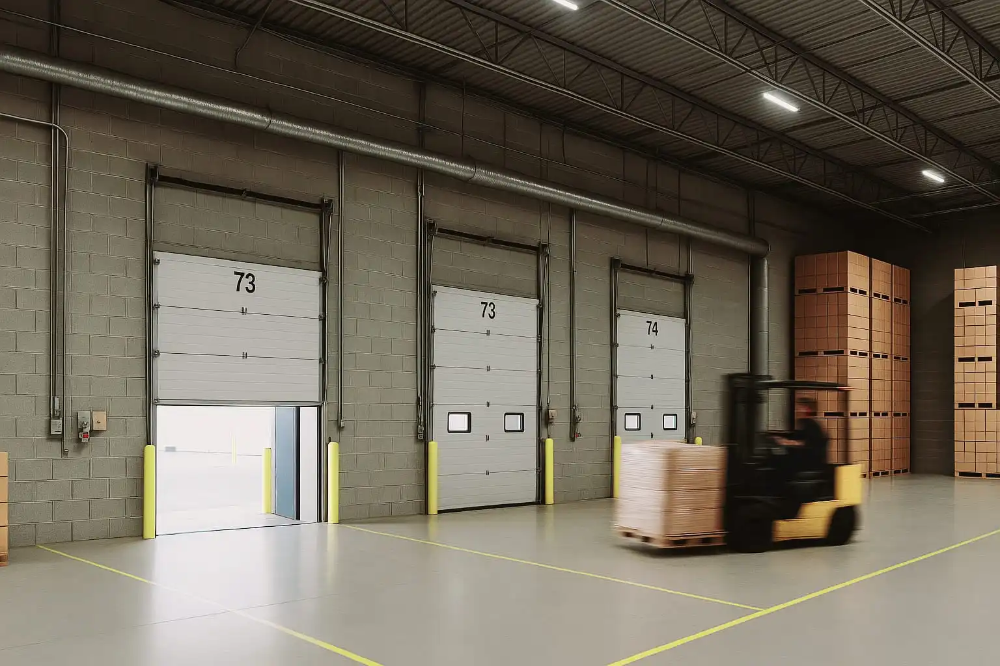
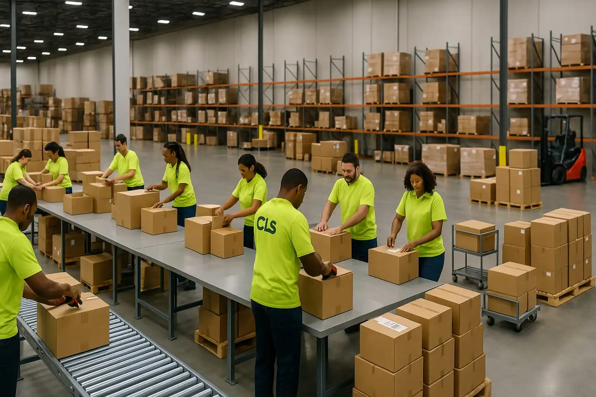

Inbound Services
Our inbound services are designed to streamline your supply chain by efficiently managing the receipt and processing of goods.
- Container Unloading: Expert handling of floor-stacked, slip-sheeted, or palletized freight to ensure safe and efficient unloading.
- Sorting and Segregation: Organizing products based on SKU, lot number, destination, or other criteria to facilitate accurate inventory management.
- Product Inspection: Thorough checks for damage, accuracy, quality, and lot codes to maintain high standards.
- Labeling: Application of carton labels and pallet License Plate Numbers (LPN) for effective tracking.
- Put-Away Services: Systematic placement of products into storage locations to optimize warehouse space and accessibility.
Outbound Services
Our outbound services ensure that your products are prepared and dispatched accurately and on time.
- Order Picking: Precise selection of items for customer orders, including case or full pallet picking.
- Loading Services: Efficient loading of pallets, slip-sheeted products, or floor-stacked items into outbound vehicles.
- Packaging and Labeling: Secure packaging and accurate labeling of products for shipment.
- Staging: Organizing products in designated areas for streamlined loading and dispatch.
- Kitting: Assembly of various components into ready-to-ship kits as per customer requirements.
- Order Fulfillment: Comprehensive management of the entire order process, from picking and packing to shipping, ensuring timely and accurate delivery.
Additional Support Services
Beyond our core services, we offer additional support to enhance your operational efficiency.
- Pallet Management: Maintenance and organization of pallets to ensure a safe and efficient warehouse environment.
- Sanitation Services: Regular cleaning and maintenance to uphold hygiene standards within your facility.
- Custom Projects: Tailored solutions to meet unique operational challenges and requirements.
Why Floor-Loaded Freight Is Different — And Why We're Built for It
Most labor providers avoid floor-loaded freight. We specialize in it.
📦 No pallets. No automation. Just raw containers packed wall to wall.
🛠️ It takes trained teams, strategic planning, and relentless pace to do it right.
At Carolina Lumper Service, we’ve made floor-loaded freight our niche:
- ✅ Fast unloads without cutting corners
- ✅ Real-time adjustments to shifting loads or damaged freight
- ✅ Flat-rate pricing options for predictable cost
- ✅ No temps — just trained professionals who know the game
This isn’t day labor. This is logistics execution.
If your warehouse is buried in containers, we’ve got your solution.
Partner with Us for Seamless Operations
Contact us today to learn how Carolina Lumper Service can customize our services to fit your specific needs.
Team Collaboration
At Carolina Lumper Service, our team works together to ensure seamless operations and exceptional service delivery.